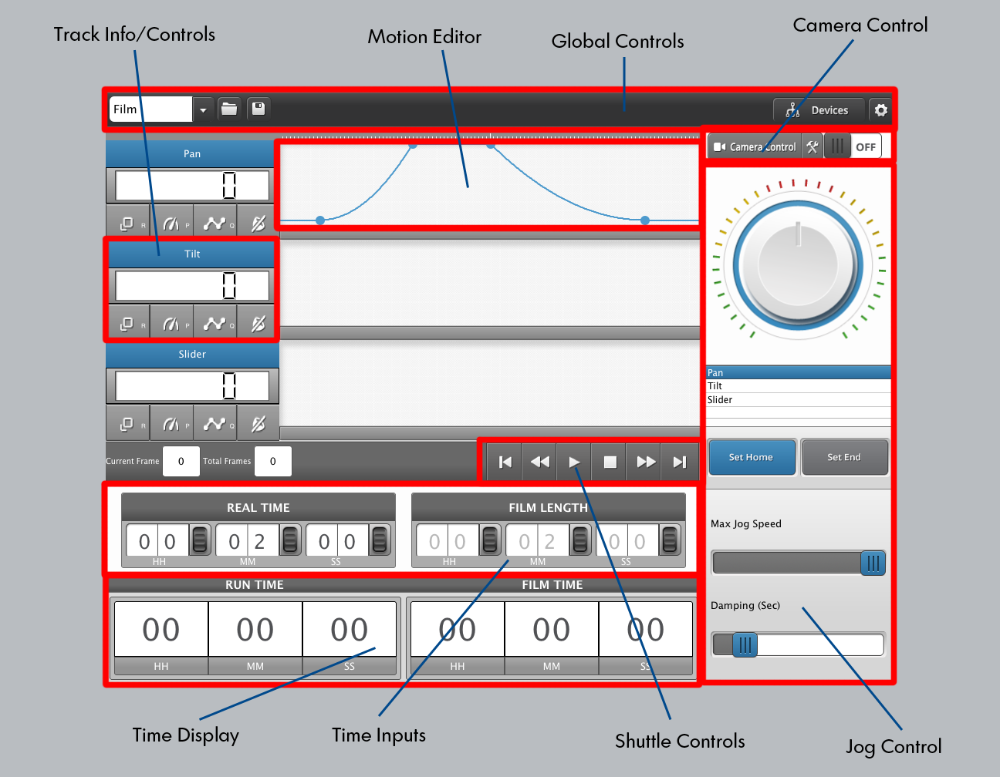

The Global Controls are present on every workflow screen. Using these
controls you may switch between workflows (Film, or Scripting), save or
load a file related to the current workflow, configure Devices, or change
Global Options.
Here, you may enable or disable the control of a camera connected to a nanoMoCo device. If the camera is enabled, you may then click on the Camera Control button to configure how the camera is utilized.
Using the Time Inputs, you can specify the Real Time in which your film takes place. If you are using camera control, you may also adjust the film length when using "Use Film Length" camera option, otherwise the Film Length will be disabled and will show the actual length of your output film.
The Time Display shows the running Real Time and Film Time when the film is executing.
The Jog Control allows you to position motors and mark the start and end of their travel.
Once the Start and End of travel for a motor has been specified, it will appear in the Motion Editor for that track. You may adjust the acceleration, deceleration, start, and stop by clicking and dragging the grab points on the motion line.
The following Track Controls are available:
Resolution controls the microstep setting for the film move. Normally, all rapids are done with the coarsest of settings, that is with full steps. This may result in rough movement for film execution, thus you should pick a finer resolution for this track when filming. The following resolutions are available:
The display selection controls how the motion track is displayed. In Progressive display, the top of the track represents the cruising speed for the move, and thus the highest range shown is the cruising speed required for the move to be completed. In Relative display, the top of the track represents the configured Maximum speed for the motor, and all speed points are relative to the maximum configured speed. For relative display, the motion track may exceed the top of the area, showing the required speed is well beyond the capabilities of the motor.
The Curve selection controls the type of acceleration and deceleration profiles used. You have three options: Linear, Quadratic, and Inverse Quadratic. When changing this selection, the motion track will immediately update showing the impact on the movement.
You may mute the track to prevent it from operating during playback. In case of an error, the track will automatically be muted for you and will not be able to be re-enabled until the error is resolved.
Once a start and end point for a motor have been set with the Jog
Controls, a default motion profile will be drawn in the Motion Editor for
that track. Mousing over the editor area will cause grab handles to
appear at four key points in the move: The beginning of movement, the end
of acceleration, the beginning of deceleration, and the end of movement.
You can drag and adjust any of these to your liking, and the motor will
arrive at its set destination according to this profile.
If you happen cause the motor to exceed its maximum configured speed, the background will go slightly red, and the track will be muted. Simply adjust the start and end points as required to bring the move back into one the motor can achieve.
Clicking on any part of the editor window that isn't a grab handle will
show a tooltip with information about that track at that point: the time,
the speed of the motor, and the position.
The global controls are present on every workflow screen. They provide options relevant to all workflows. The workflow drop-down allows you to select which workflow screen to work with, presently the Film workflow or the Slim Scripting workflow. The Save and Load buttons allow you to save a file representing the current workflow. On the Film screen, it lets you save a film file (ending in .film) that represents everything you've set up for the current film, and on the Scripting screen, it lets you save a script file (ending in .slim) containing all of the commands you've entered.
Additionally, the Device Manager and Global Options can be accessed via the Global Controls.
The Camera Control selector lets you configure whether or not the camera will be controlled by one of the attached nanoMoCo-based nodes. Without enabling camera control, you will only be able to shoot real-time video. For time-lapse use, the camera control selector must be turned on. Once this selector is turned on, the Camera Control parameters may be configured by clicking the settings button. The following settings are available:
This is the default option enabled. When use film time is enabled, the interval is automatically determined by specifying the Film Length on the Film Workflow screen. The Film Length will be limited by the Real Time of the Film, The Frames per Second setting, and the minimal achievable interval based on your other camera control settings. If this option is disabled, the Manual Interval option will be made available.
The Frames Per Second input allows you to specify the frames per second
of the output film you intend to make. This is used to assist in limiting
the maximum Film Time you can specify when Use Film Time is enabled, or to
display the final output film time when Use Film Time is disabled.
Additionally, total frame and current frame display
If Use Film Time is disabled, the Manual Interval selector will be shown. If this is turned on, you will be able to input the interval at which the camera is fired. If it is turned off, the fastest possible interval will be used based on your other settings.
The default mode of operation is Continuous - that is, the motor moves while the camera is firing. If you wish to have the motor be still during exposures, or to perform a stop-motion film, you should enable this option. Once this option is enabled, you will have the ability to pause the film during execution, or advance in single frames.
If you wish to control the exposure time off-camera, such as for very long exposures, enable this option. After enabling this option, you will be able to specify the exposure time in seconds. If this is disabled, an exposure time of 0.2s will be used, and you will be expected to set the exposure time on your camera, and the proper Exposure Delay below.
When controlling the exposure time on your camera, it is very important to specify the correct exposure delay in the camera controls. This input specifies how long (in seconds) the motion nodes should wait after exposing the camera before triggering other actions. Failure to provide enough time can result in exposures being triggered before the camera is ready, or movement during an exposure in SMS mode.
The Focus Lock setting determines whether or not the focus line should be tied to the exposure line, such that the focus is always triggered with the exposure. This is required for correct operation on many cameras, and should only be turned off if it presents problems.
Focus Control determines whether or not the focus line should be triggered before triggering an exposure. This would be used in some special workflow situations where the camera needs to be woken up (when using very long intervals, for example), or in special cases using auto-focus. When enabled, you are given the opportunity to express the focus time in seconds.
The Jog Control area is the primary means for interacting with your motor axes for film setup. First, select an axis from the list of available axes, and then you will be able to move the motor in either direction using the jog wheel. Once you position the motor at its starting point, press the home button and then jog the motor to its final position, and press the end button.
You may adjust the maximum speed of the jog wheel and the damping time using the sliders.
The Time Inputs allow you to configure the Real Time of the film, and the Film Time when appropriate. If you have setup the Camera Configuration to Use Film Time, you will be able to specify the output film time up and to the maximum possible film time based on the real time of the film, and the other settings you have configured. If you have not setup the Camera Configuration to Use Film Time, the Film Time Input will be disabled and will instead show the actual output film time based on your parameters.
You may use the arrow keys, mouse wheel, or click and scroll on these inputs to change them.
The Shuttle Controls allow you to execute the film you have created. The Full Forward and Full Reverse seek all nodes to the their home or ends respectively, and are only active when the film is stopped. The Frame Advance / Rewind controls move the film forward one frame, and take one shot - they are only available when Shoot Move Shoot is enabled. The Play button sends all non-muted tracks home, and then begins executing the film. If Shoot Move Shoot is enabled, the Play button will change to pause during execution, allowing you to pause and resume filming. Pause is unavailable during continuous moves, as it is not possible to smoothly start a motor at a speed greater than zero.
To effectively use Graffik, you must have one or more devices added and configured. This section will give a brief overview of the different ways to manage and add devices.
Before you can add any devices, you must add a Bus. A Bus is a
USB-connected set of devices all sharing the same port. Before attempting
to add a Bus, make sure your USB adapter or Cable is properly connected
and shown as working in your operating system.
To add a Bus, click on the Devices button. The default screen shown will be the Device Manager, on this screen, press the "Add Bus" button. After pressing this button, select the correct communications port, and give the Bus a unique name.
If you have just received your device, or have just performed a factory reset on it, it must be initialized. Connect one, and only one uninitialized device at a time.
To initialize a device, connect it to the bus (there may be other, already initialized devices on the bus) and press the Initialize Device button in the Devices window. A quick scan for the device will be performed, and if it is found, you will be prompted to move to the next step. At the next step, select the type of device, give it a unique address, and a unique name.
If you are connecting one or more devices that have already been
configured, you can scan for devices. The Scan for Devices button will
scan the entire bus address space, and look for any known device types on
the bus. Once the scan has been completed, you will be prompted to add
each device found.
Before using a device, it is important that you configure it properly.
To configure a device, within the Device Manager, select the configure
icon next to the Device Name.
A master device must always be chosen to shoot a film, the purpose of the master device is to synchronize other nodes, provide information back to the user interface about operation, and control the camera if camera control is enabled. Failure to configure a device as a master will result in an error when attempting to start a film.
For real-time video, you are expected to start your camera filming manually, and then press play in Graffik to execute the moves. This is the most simple form of filming, and Camera Control should be disabled.
Define your movements, specify the real time of the video, and press
play.
For basic time-lapse videos, where exposures are less than one second, simply enable Camera Control. Now, you may define your movements, specify the real-time of the video, the output video time (up and to the maximum possible time), and then press play.
Graffik can automatically make the longest possible time-lapse video given your settings. To operate in this way, enable camera control, and in the camera control configuration, disable the Use Film Time option, and specify the correct frames per second of your final video. Now, when adjusting parameters either for the camera, or for the real-time of the video, the Film Time will automatically display the real length of your final video.
By controlling the interval manually, you will control exactly how your timelapse film is executed. You can also configure other options, such as bulb control, focus control, and more.
The following Global Options are available:
Specify motion units in steps, imperial (inches), or metric (centimeters). For rotary movements, any selection other than steps will always display in degrees.
Forces a stop any time an error is received from a node. This setting should generally be left on unless there is a specific hardware or system problem which cannot be corrected that does not otherwise impact node operations.
Select from any available themes to change the look and feel of the UI.
Clears all configured settings, buses, devices, and more. You must re-start Graffik after clearing options for it to fully take effect.